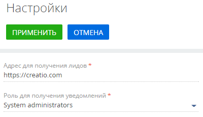
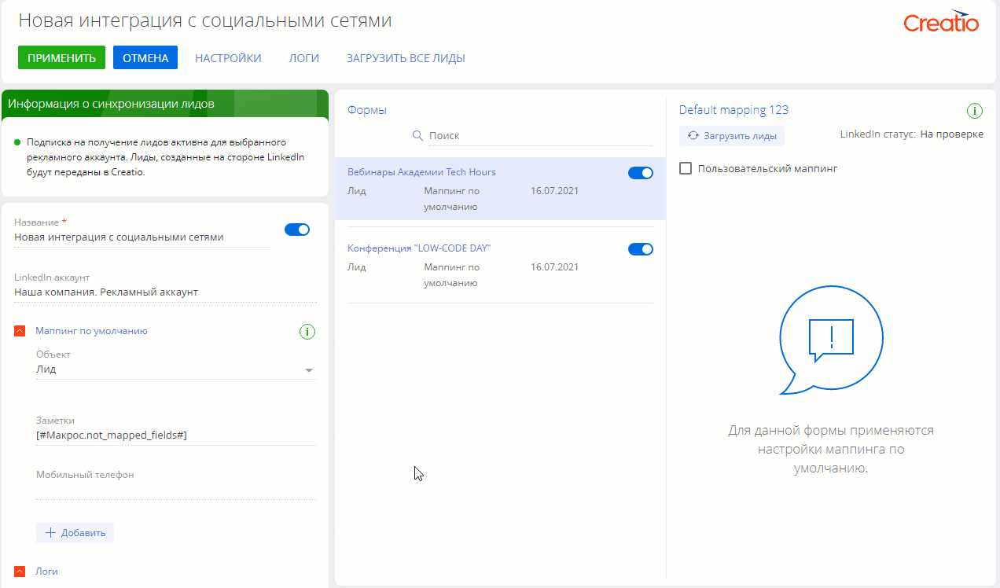
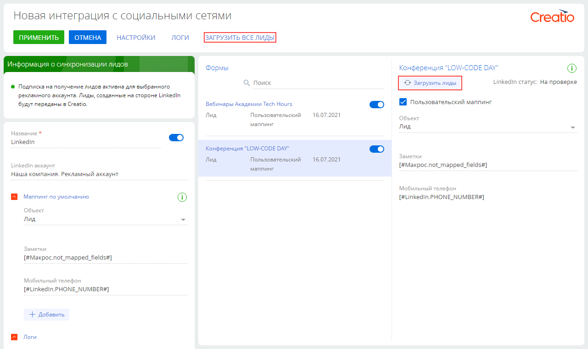
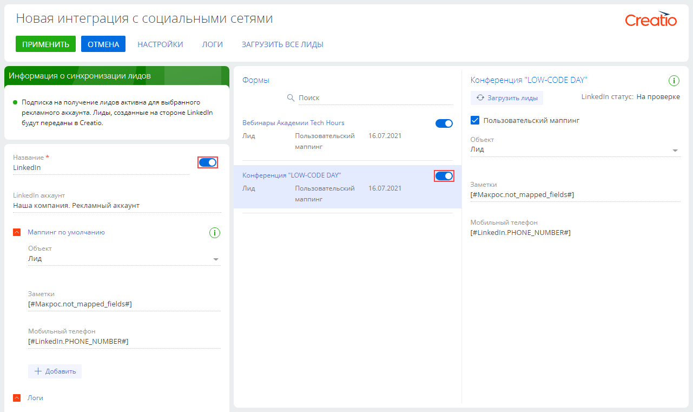
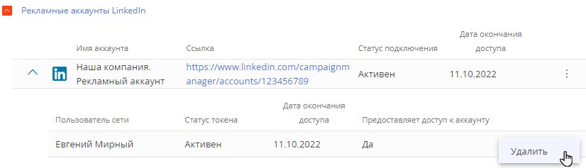

Автоматизируйте создание лидов в Creatio благодаря интеграции с механизмом лидогенерации LinkedIn.
Перед настройкой интеграции Creatio с LinkedIn убедитесь, что ваша учетная запись LinkedIn соответствует следующим требованиям:
- Вам доступны формы привлечения лидов. У вас настроен рекламный аккаунт в LinkedIn Campaign Manager. Подробнее о настройке рекламного аккаунта читайте в документации LinkedIn: Создание учетной записи LinkedIn Ads, Создание форм для привлечения лидов.
- У вашей личной учетной записи LinkedIn есть доступ к рекламному аккаунту.
- Ваша личная учетная запись входит в роль “Суперадминистратор” или “Менеджер форм для привлечения лидов” на странице организации, связанной с рекламным аккаунтом.
Также убедитесь, что в Creatio заполнены следующие системные настройки:
- “Адрес Identity сервера” (код “IdentityServerUrl”);
- “Идентификатор приложения для Identity сервера” (код “IdentityServerClientId”);
- “Секретный ключ для Identity сервера” (код “IdentityServerClientSecret”).
Если данные системные настройки не заполнены, обратитесь в службу поддержки Creatio.
Настроить интеграцию с рекламным аккаунтом LinkedIn
Вы можете настроить интеграцию с любым количеством личных учетных записей LinkedIn. Каждая из них может быть связана с несколькими рекламными аккаунтами. Интеграция с Creatio настраивается отдельно для каждого рекламного аккаунта LinkedIn.
После подключения аккаунта LinkedIn настройте соответствие полей (маппинг) и проверьте корректность передачи данных из LinkedIn в Creatio. Вы также можете воспользоваться маппингом для полей с константными значениями. Эта возможность доступна для следующих типов колонок: “Строка”, “Дробное число”, “Логическое”, “Дата/Время” и “Справочник”. Это поможет определять и фильтровать импортированные записи. Например, в справочном поле Мероприятие можно указать “Дни Low-Code”.
В Creatio доступны следующие возможности маппинга:
- Маппинг по умолчанию применяется ко всем формам привлечения лидов в вашем рекламном аккаунте. Эта функциональность доступна только для полей, которые входят в блок "Сведения профиля" группы “Сведения о лидах и настриваемые вопросы” редактора форм LinkedIn. В этих полях содержатся данные типа “Строка” или “Дата”.
-
Пользовательский маппинг применяется только к определенной форме привлечения лидов. Этот вид маппинга доступен всех полей, которые входят в группы “Сведения о лидах и настриваемые вопросы” (“Сведения профиля”, “Настраиваемые вопросы”, “Пользовательские флажки”) и “Скрытые поля” редактора форм LinkedIn. В этих полях содержатся данные типа “Строка”, “Дата”, “Логическое”.
Если для формы привлечения лида настроен пользовательский маппинг, то Creatio применит его и проигнорирует настроенный маппинг по умолчанию.
Подробное описание полей формы привлечения лида вы найдете в документации LinkedIn: Создание форм для привлечения лидов, Поля формы для привлечения лидов.
По умолчанию в каждом из вариантов маппинга настроена передача в поле Заметки макроса “not_mapped_fields”, который передает значения всех полей формы в виде строки. Этот макрос является обязательным для формы привлечения лидов. При необходимости вы можете настроить передачу значений данного макроса в любое поле с типом данных “Строка” и неограниченной длиной.
В результате после настройки интеграции и маппинга полей в Creatio будут автоматически создаваться лиды по уникальным ответам на формы LinkedIn.
В общем случае порядок настройки интеграции Creatio и LinkedIn выглядит следующим образом:
- Настроить интеграцию с рекламным аккаунтом LinkedIn. Подробнее >>>
- Настроить маппинг полей по умолчанию. Подробнее >>>
- Настроить пользовательский маппинг (опционально). Подробнее >>>
Шаг 1. Настроить интеграцию с рекламным аккаунтом LinkedIn.
Чтобы настроить интеграцию:
- Откройте дизайнер системы по кнопке
 .
. - В группе “Импорт и интеграции” кликните по ссылке “Настройка сервиса лидогенерации социальных сетей”. Страница настройки откроется в новом окне.
-
В поле Адрес для получения лидов введите URL-адрес вашего приложения Creatio (Рис. 1). По умолчанию это поле заполнится значением из адресной строки браузера.
- В поле Роль для получения уведомлений укажите роль, пользователи которой будут получать в коммуникационной панели уведомления о работе лидогенерации.
-
Нажмите кнопку Применить, чтобы сохранить настройки. Откроется реестр раздела Лидогенерация социальных сетей.
Рис.1 — Поле Адрес для получения лидов - На открывшейся странице нажмите кнопку Добавить. Откроется окно выбора социальной сети.
- Кликните по логотипу сети, интеграцию с которой необходимо настроить.
- В нашем примере это LinkedIn. Нажмите Далее.
-
Войдите в учетную запись LinkedIn и предоставьте Creatio доступ к управлению вашими рекламными аккаунтами. Нажмите Разрешить.
Эта настройка выполняется только при первом входе в учетную запись.
-
Выберите все рекламные аккаунты, с которых вы планируете регистрировать лиды, и нажмите Далее.
Эта настройка выполняется только при первом входе в учетную запись.
- Выберите в выпадающем списке один из синхронизированных аккаунтов и нажмите Далее. Откроется страница настройки интеграции с выбранным аккаунтом.
- Укажите в поле Название имя выбранной интеграции, которое отобразится в реестре раздела (опционально).
- Повторите шаги 6-8 для всех рекламных аккаунтов, с которых вы планируете регистрировать лиды (опционально).
В результате в Creatio будет добавлена новая интеграция с рекламным аккаунтом LinkedIn.
Шаг 2. Настроить маппинг полей по умолчанию.
Настройте маппинг полей по умолчанию, чтобы при создании лида в Creatio заполнялись данные профиля пользователя LinkedIn, который заполнил форму привлечения лида. Для этого:
- Перейдите к детали Маппинг по умолчанию в левой части страницы. Нажмите Добавить.
- Укажите колонки лида, для которых необходимо настроить передачу данных из LinkedIn. Нажмите Выбрать. На деталь будут добавлены поля, для каждого из которых необходимо указать соответствие в форме привлечения.
- Наведите курсор мыши на появившееся поле и нажмите кнопку . Укажите значение поля (Рис. 2). Это можно сделать несколькими способами:
Рис. 2 — Пример настройки маппинга полей по умолчанию
- Для текстовых полей, которые необходимо заполнить значениями из формы привлечения лида, выберите в выпадающем списке Поле формы. В появившемся окне выберите поле формы привлечения лида и нажмите Установить.
- Для текстовых полей, которые необходимо заполнить константой, выберите в выпадающем списке Текстовое значение и укажите необходимую информацию. Для всех лидов, зарегистрированных при помощи данной интеграции, поле будет заполняться указанным значением.
- Для логических полей, например, Не использовать SMS, выберите значение “Да” или “Нет”. Для всех лидов, зарегистрированных при помощи данной интеграции, поле будет заполняться указанным значением.
- Для справочных полей, например, Источник, выберите значение соответствующего справочника. Для всех лидов, зарегистрированных при помощи данной интеграции, поле будет заполняться указанным значением.
- Если у вас не настроен маппинг для макроса “not_mapped_fields”, то добавьте строковую колонку и в меню кнопки выберите пункт Другое → Не выбранные поля формы. В эту колонку будут переданы все данные, полученные при заполнении формы привлечения лида.
- Повторите действия, описанные в п. 3, для всех полей, где необходимо настроить маппинг. Рекомендуем настроить маппинг всех полей формы с колонками Creatio, чтобы не потерять важные для взращивания лида данные.
- Нажмите кнопку Применить, чтобы сохранить настройки.
Шаг 3. Настроить пользовательский маппинг (опционально).
Настройте соответствие колонок Creatio и полей, которые входят в группы “Сведения о лидах и настриваемые вопросы” (“Сведения профиля”, “Настраиваемые вопросы”, “Пользовательские флажки”) и “Скрытые поля” редактора форм LinkedIn. Пользовательский маппинг позволяет также настроить автозаполнение колонок Creatio определенными значениями. Для этого:
- Откройте раздел Лидогенерация социальных сетей и выберете интеграцию, для которой необходимо настроить маппинг. Откроется страница настройки.
- Установите признак Пользовательский маппинг в правой части страницы.
- Нажмите кнопку Добавить.
- Настройте поля для пользовательского маппинга. Эта настройка выполняется аналогично настройке маппинга по умолчанию.
- Нажмите кнопку Применить, чтобы сохранить изменения.
В результате все лиды, зарегистрированные в Creatio при заполнении данной формы привлечения лидов LinkedIn, будут иметь уникальный LinkedIn ID.
Настроенные в приложении правила поиска дублей актуальны для всех лидов, полученных в результате интеграции с социальными сетями. Подробнее: Поиск дублей лидов, Поиск и объединение дублей.
Синхронизировать лиды, зарегистрированные до настройки интеграции
В Creatio будут создаваться только лиды, полученные после настройки интеграции. Чтобы синхронизировать лиды, которые были получены ранее:
- Откройте дизайнер системы по кнопке
 .
. - В группе “Импорт и интеграции” кликните по ссылке “Настройка сервиса лидогенерации социальных сетей”.
- Откройте страницу интеграции, для которой необходимо выполнить настройку.
-
Нажмите Загрузить все лиды на панели инструментов, чтобы синхронизировать с Creatio все лиды, полученные вашим рекламным аккаунтом. Вы также можете воспользоваться кнопкой Загрузить лиды в правой части рабочей области, чтобы загрузить в приложение только те лиды, которые были получены через данную форму (Рис. 3). Откроется диалоговое окно.
Рис. 3 — Кнопки загрузки лидов - Укажите период создания лидов, которые необходимо загрузить в приложение. Обратите внимание, что данные лидов хранятся в LinkedIn не более 90 дней. В Creatio будут загружены все уникальные лиды, созданные в указанный период, независимо от того, была ли активна интеграция с LinkedIn в момент заполнения формы.
- Нажмите Загрузить.
В результате в Creatio будут созданы лиды с уникальными идентификаторами LinkedIn, созданные в указанный период.
Отключить лидогенерацию LinkedIn
Отключить лидогенерацию LinkedIn можно несколькими способами. Выбор способа зависит от бизнес-задачи и требований безопасности вашей сети. Например, можно отключить интеграцию на стороне Creatio, сохранив настройки интеграции с учетной записью и рекламными аккаунтами или только с рекламными аккаунтами.
Отключить регистрацию лидов с формы или с рекламного аккаунта
- Откройте дизайнер системы по кнопке .
- В группе “Импорт и интеграции” кликните по ссылке “Настройка сервиса лидогенерации социальных сетей”.
- Откройте страницу интеграции, для которой необходимо выполнить настройку.
-
Установите переключатель рядом с названием необходимой формы в области Форма или рядом с полем Имя в левой части страницы в положение “Неактивна”.
Рис. 4 — Переключатели загрузки лидов - Нажмите кнопку Применить, чтобы сохранить изменения.
В результате в Creatio не будут создаваться лиды, зарегистрированные через указанную форму или рекламный аккаунт. Вы можете восстановить лидогенерацию, вернув переключатели в положение “Активна”.
Отключить персональную учетную запись LinkedIn
- Откройте дизайнер системы по кнопке .
- В группе “Импорт и интеграции” кликните по ссылке “Настройка сервиса лидогенерации социальных сетей”.
- Нажмите Настройки.
-
Нажмите кнопку рядом с данными вашей персональной учетной записи на детали Рекламные аккаунты LinkedIn. В появившемся меню выберите Удалить и подтвердите действие (Рис. 5).
Рис. 5 — Отключить учетную запись LinkedIn
В результате Creatio больше не будет использовать данные этого пользователя для доступа к рекламному аккаунту. Если удаленная учетная запись была единственной, связанной с рекламным аккаунтом, то лидогенерация из LinkedIn будет прекращена.
Отключить рекланый аккаунт LinkedIn
- Откройте дизайнер системы по кнопке .
- В группе “Импорт и интеграции” кликните по ссылке “Настройка сервиса лидогенерации социальных сетей”.
- Нажмите кнопку рядом с интеграцией, которая использует аккаунт. В появившемся меню выберите Удалить и подтвердите действие.
- Нажмите Настройки.
- Нажмите кнопку рядом с данными вашего рекламного аккаунта на детали Рекламные аккаунты LinkedIn. В появившемся меню выберите Удалить и подтвердите действие.
В результате Creatio утратит доступ к вашему рекламному аккаунту, лидогенерация из LinkedIn будет прекращена.